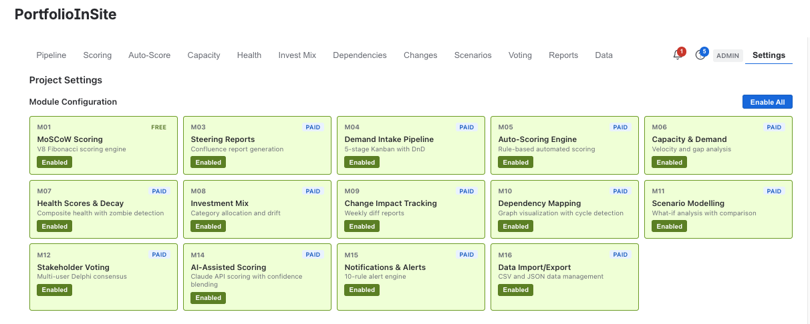
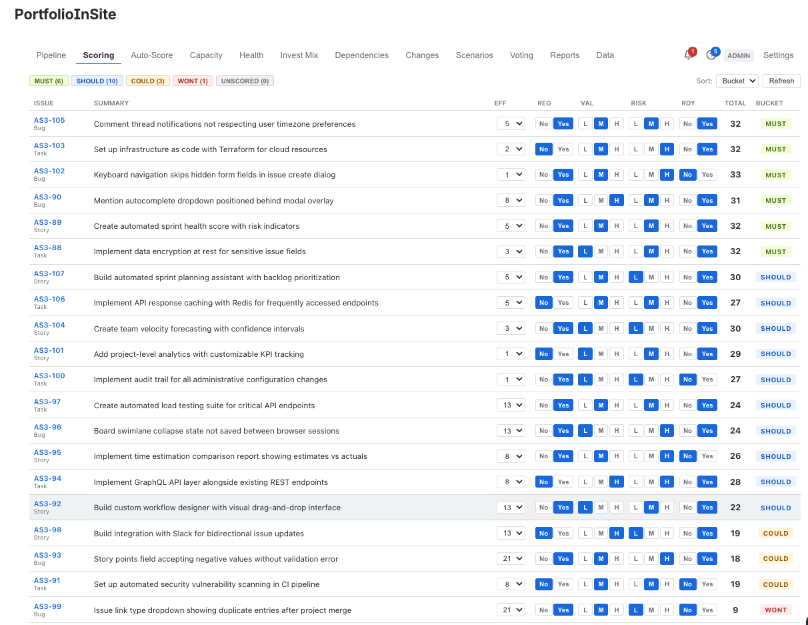
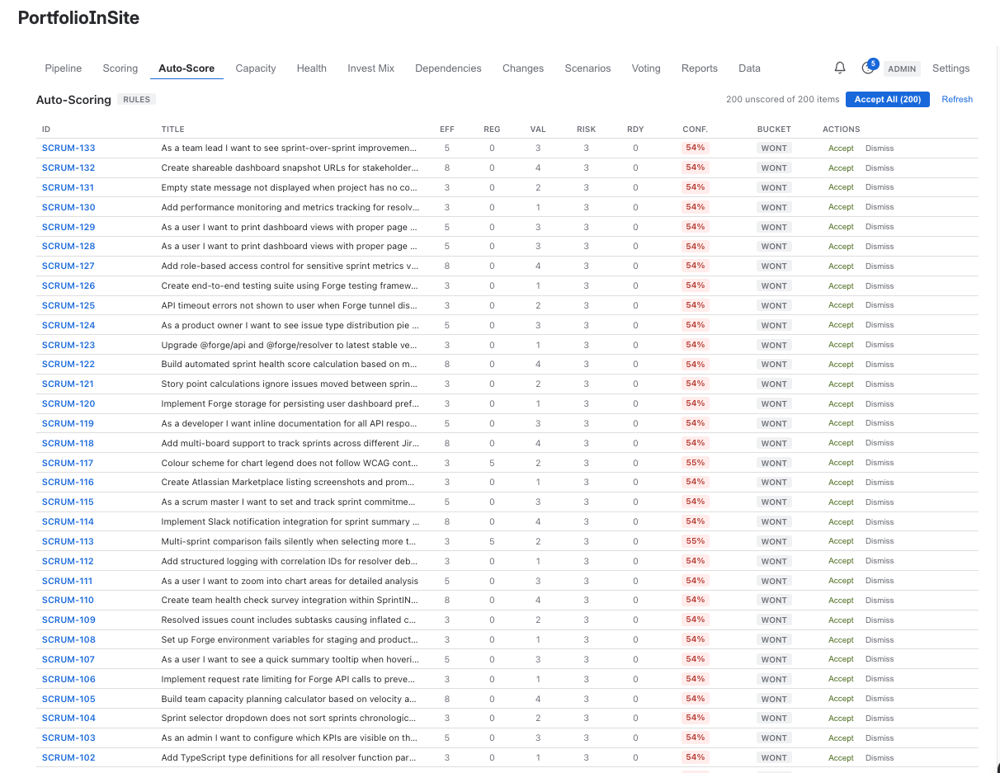
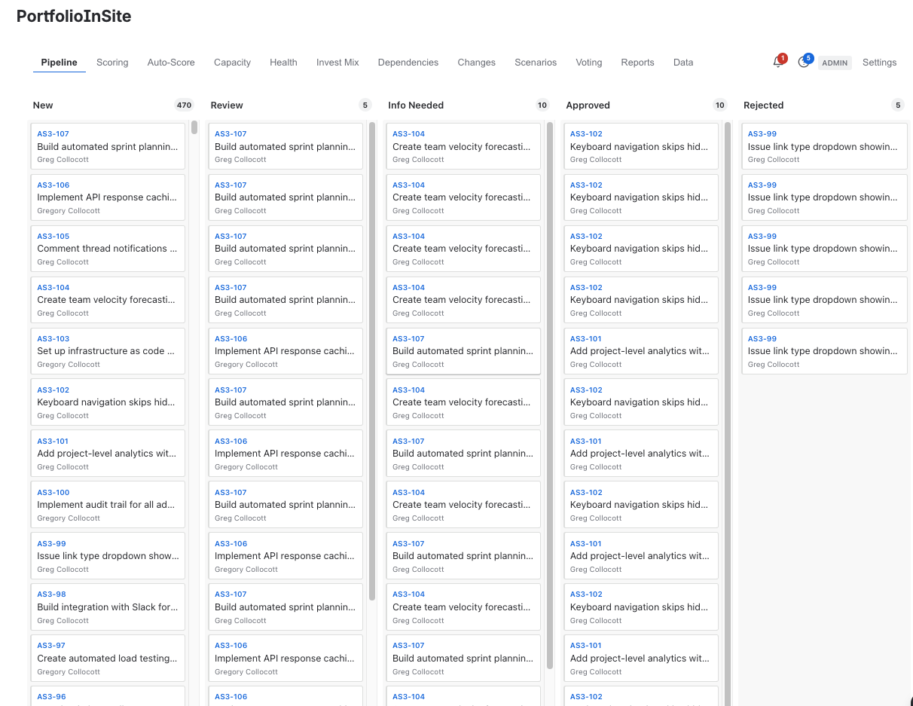
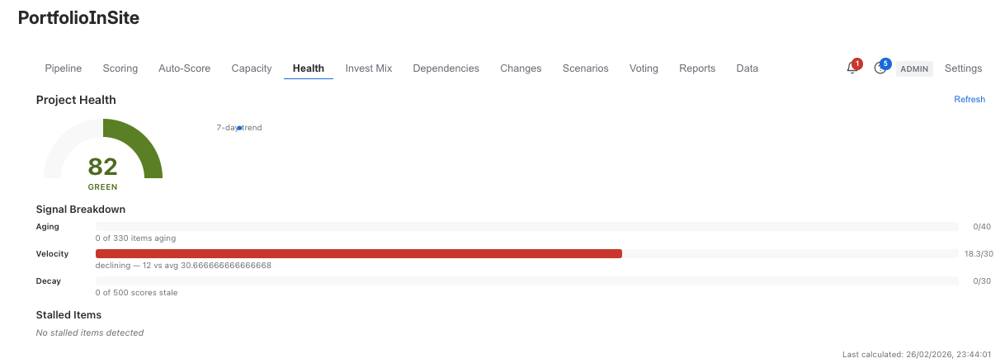
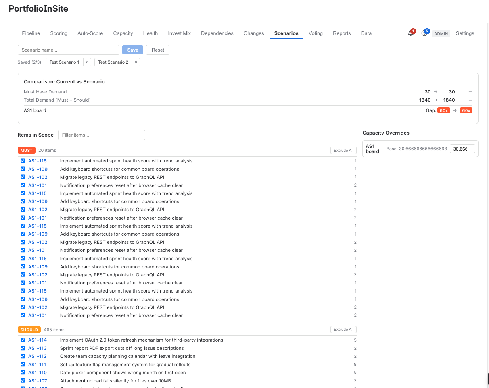
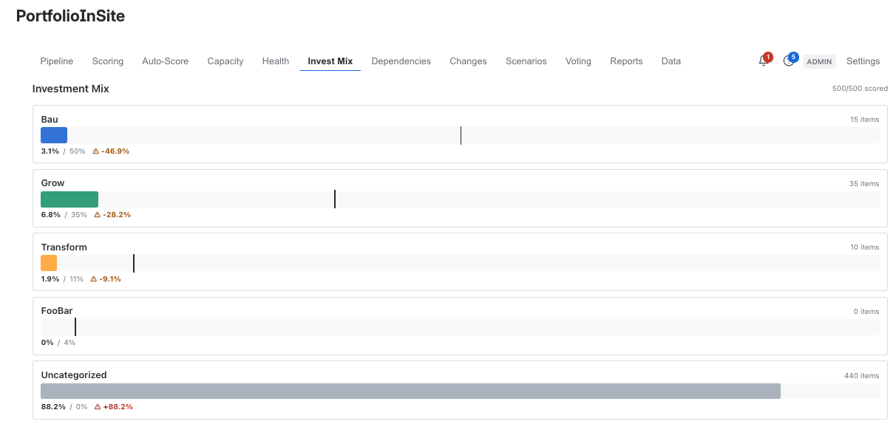

From MoSCoW scoring to AI-assisted prioritisation — every capability enterprise portfolio governance needs, built natively on Atlassian Forge inside Jira Cloud.

PortfolioInSite isn't a monolithic tool — it's 19 purpose-built modules across 5 build phases. Start with free MoSCoW scoring. Add paid modules as your governance maturity grows. No all-or-nothing licensing.

The foundation every prioritisation decision builds on. Weighted, Fibonacci-normalised scoring across five criteria. Score your backlog consistently, defend your decisions with data, and stop prioritisation by opinion.

Start with rule-based auto-scoring that applies your governance criteria consistently. Graduate to Claude API-powered scoring that analyses backlog items and recommends scores with confidence levels — keeping humans in the loop where it matters.

5-stage Kanban with drag-and-drop triage. Capture demand from stakeholders, auto-score at the front door, and surface only what matters to the steering committee. Ageing indicators flag stalled requests. Capacity guardrails prevent over-commitment.

Composite health indicators with zombie detection. RAG status, risk scores, and trend analysis across your portfolio. Items that stall get surfaced automatically — not buried in a backlog nobody reads.

What-if analysis with side-by-side comparison. Model different prioritisation scenarios before committing resources. See the impact of trade-offs before they become commitments.

Category allocation tracking — Run, Grow, Transform. Set target percentages, monitor actual allocation, and detect drift before it becomes a boardroom surprise. Investment visibility that leadership actually uses.
Every module designed to solve a specific portfolio governance problem. Built by practitioners who've run enterprise PMOs.
Auto-generated Confluence reports for leadership. Progress snapshots, risk highlights, and investment mix visibility — ready to present, not hand-assembled.
M03 Learn More →Velocity and gap analysis across teams. See committed effort against available capacity in real time. Know before you're over-committed.
M06 Learn More →Weekly diff reports showing what moved, what's new, and what was killed. Full audit trail of every portfolio decision.
M09 Learn More →Graph visualisation with cycle detection. See cross-team dependencies, identify blockers before they cascade, and map impact paths across your portfolio.
M10 — In UAT Learn More →Multi-user Delphi consensus scoring. Aggregate stakeholder perspectives into defensible prioritisation decisions.
M12 Learn More →10-rule alert engine. Automated notifications for scoring changes, health threshold breaches, ageing items, and governance milestones.
M15 Learn More →CSV and JSON data management. Bulk import scoring data, export portfolio snapshots, and integrate with external reporting tools.
M16Built on Atlassian Forge — not a bolt-on. Zero external dependencies, full data residency compliance, and native Jira Cloud integration. Your data never leaves Atlassian.
PlatformDesigned in Sydney by practitioners who've led enterprise delivery across banking, automotive, telecommunications, and government. 17+ years of real-world governance built into every module.
Agility OpsStart free with M01 MoSCoW Scoring — no credit card required. Upgrade to unlock the full governance suite as your needs grow.